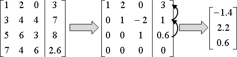
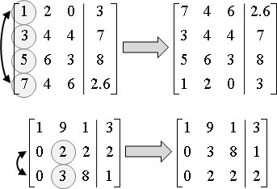
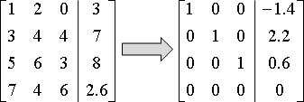
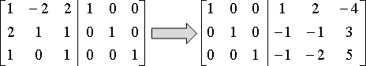
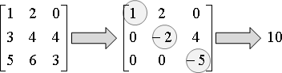

Linear Equations: Gaussian Elimination
Linear Equations與等量公理
這裡預設大家已經相當熟悉線性方程組的計算手法：利用等量公理，由上往下把變數消光光，變成階梯狀；然後由下往上解出每個變數。還不太熟悉的讀者，先回憶一下吧！這個計算手法就叫做「高斯消去法」。
演算法（Gaussian Elimination）
現在，以矩陣的相關術語，重新解釋「高斯消去法」。
把一個矩陣，化成對角線元素皆為一的上三角矩陣。

按照字典順序窮舉一對一對的row，每窮舉出一對row，就處理這兩個row──求出首項係數的倍率，以上方row消去下方row，使下方row的首項係數變成零。
有一個特殊情況是，當上方row的首項係數是零的時候，就要考慮與下方row交換，讓上方row的首項係數盡量不是零。
這個交換row的動作稱作pivoting，不為零的那一個首項係數稱作pivot，包含pivot的那一個row稱作pivot row。
高斯消去法的過程，以row的角度來看，只有三種row運算：倍率、相減、交換。但是實作時，我們通常不會特地寫一個row的資料結構、定義這三種運算，因為程式結構太過複雜的話，程式執行時間也會變長。實作時，通常是自己慢慢數索引值，小心的從二維陣列中取得元素，逐步完成row運算。
時間複雜度是O(N^2 * M)，N×M為矩陣的大小。由於一般情況都是討論方陣較多，N與M相等，所以會把時間複雜度寫成O(N^3)。
下面提供方陣的高斯消去法程式碼；至於一般矩陣的高斯消去法，就留給大家自行練習。
解線性方程組
矩陣參數化、完成高斯消去法之後，使用Iterative Method，從最後一個row開始，把目前解出的未知數反覆代入到上一個row，求得每一個未知數。
這個計算過程，是從最後一個未知數開始計算，而不是從第一個未知數開始計算，故命名為「逆向代入back substitution」。逆向代入的時間複雜度是O(N^2)。
如果要讓逆向代入的誤差變小，可以在進行高斯消去法的時候，總是把首項係數絕對值最大的row，挪到最上方，再消去餘下的row。
UVa 10109 10524 10828 ICPC 3563
演算法（Gauss-Jordan Elimination）
「高斯喬登消去法」是延伸版本。把原矩陣的對角線化成一、其餘元素化為零。
時間複雜度與高斯消去法相同，仍是O(N^3)。
解線性方程組，論效率，高斯消去法是比較好的選擇：高斯消去法暨逆向代入的總步驟數，比高斯喬登消去法還要少。論程式碼長度，高斯喬登消去法是比較好的選擇：只消修改一下高斯消去法的消去範圍，即可得到解，而不必逆向代入。
LUP Decomposition
http://ccjou.wordpress.com/2010/09/01/
「LUP分解」是利用高斯消去法，將一個方陣化為下三角矩陣L、上三角矩陣U、列交換矩陣P，三者的乘積。時間複雜度為O(N^3)。
有時候列交換矩陣P恰好等於單位矩陣I，而不需要把列交換矩陣P寫下來，此時「LUP分解」可簡單稱作「LU分解」。
LUP分解的最大特色是解線性方程組Ax = b，當A固定，b有許多組要解，每次求解僅需時O(N^2)。若是單純地使用高斯消去法，針對每一組不同的b，每次求解皆需時O(N^3)。
一、row交換矩陣，調換參數向量的維度順序。 二、下三角矩陣，順向代入（forward substitution）。 三、上三角矩陣，逆向代入（back substitution）。
Cholesky Decomposition
對稱正定矩陣的LU分解。L與U剛好互相對稱。
時間複雜度仍為O(N^3)，但是步驟數量較少。
計算一個方陣的inverse
一般是利用「高斯喬登消去法」。
高斯消去法最初的用途是解線性方程組。線性代數開始流行之後，才用來計算矩陣的inverse和determinant。
計算一個方陣的determinant
一般是利用「高斯消去法」。
進行高斯消去法的過程當中，保留pivot row的原有倍率。最後的上三角矩陣，其對角線元素的乘積，便是determinant。
如果矩陣裡都是整數，那麼determinant也會是整數。要避免浮點數誤差，可以使用輾轉相除法進行消去。時間複雜度是O(N^3 * logC)，C是過程當中，絕對值最大的首項係數。
UVa 684